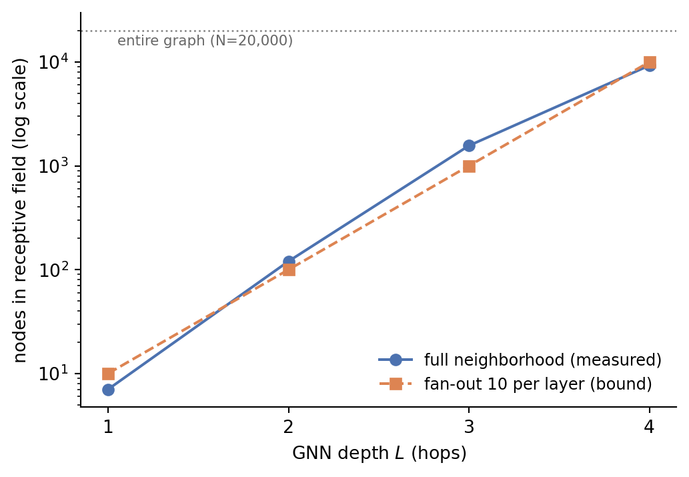

Why a mini-batch of 1,000 nodes can pull in most of the graph, and what fan-out sampling actually buys you.
Published
September 7, 2026
The awkward thing about mini-batch training for GNNs is that a mini-batch isn’t self-contained. To compute one node’s representation at layer \(L\), you need its neighbors’ representations at layer \(L-1\), which need their neighbors at \(L-2\), and so on. The batch quietly drags in an \(L\)-hop neighborhood.
The growth term
For a graph with average degree \(d\), the expected size of a node’s \(L\)-hop neighborhood, ignoring overlap, is
which is exponential in depth. Overlap makes the real number smaller — but on graphs with small diameter, the thing that eventually bounds it is \(N\) itself, the whole graph. That’s the failure mode: at some depth, “the neighborhood” and “the dataset” stop being different things.
Neighbor sampling (Hamilton et al. 2017) caps the branching instead of the result. Sampling at most \(r_l\) neighbors at layer \(l\) bounds the receptive field by \(\prod_{l=1}^{L} r_l\), independent of the graph’s actual degree distribution. It’s a bound you choose rather than one the data hands you.
Measuring it
Rather than trust the closed form, here’s the real count on a scale-free synthetic graph — 20,000 nodes, preferential attachment, so the degree distribution is heavy-tailed the way real networks tend to be. BFS from a sample of seed nodes, counting distinct nodes reached within \(L\) hops:
Code
import matplotlib.pyplot as pltimport networkx as nximport numpy as nprng = np.random.default_rng(0)G = nx.barabasi_albert_graph(20_000, 3, seed=0)N = G.number_of_nodes()seeds = rng.choice(N, size=200, replace=False)depths = [1, 2, 3, 4]# Mean distinct nodes reached within L hops.measured = []for L in depths: sizes = [len(nx.single_source_shortest_path_length(G, int(s), cutoff=L))for s in seeds] measured.append(np.mean(sizes))fanout = [min(10** L, N) for L in depths]fig, ax = plt.subplots(figsize=(6, 4))ax.plot(depths, measured, "o-", color="#4C72B0", label="full neighborhood (measured)")ax.plot(depths, fanout, "s--", color="#DD8452", label="fan-out 10 per layer (bound)")ax.axhline(N, color="#888", ls=":", lw=1)ax.text(1.05, N *0.72, f"entire graph (N={N:,})", fontsize=8, color="#666")ax.set_yscale("log")ax.set_xticks(depths)ax.set_xlabel("GNN depth $L$ (hops)")ax.set_ylabel("nodes in receptive field (log scale)")ax.legend(frameon=False, fontsize=9)ax.spines[["top", "right"]].set_visible(False)plt.show()

Figure 1: Mean L-hop receptive field per seed node, measured by BFS on a 20,000-node preferential-attachment graph, against a fan-out-10 sampling bound.
At L=4, the average seed node reaches 9,248 nodes — 46% of the graph.
Four layers, from a single seed, reaches nearly half the graph. This is why depth is expensive for GNNs in a way it isn’t for CNNs: an extra layer multiplies data movement rather than adding a fixed cost.
The sampling bound is more interesting than it first looks. At \(L=1\) it sits above the measured curve — mean degree here is about 7, so capping at 10 does nothing. It dips usefully below at \(L=2\) and \(L=3\). Then it crosses back above at \(L=4\), where \(10^4\) exceeds the ~9.2k nodes you would have reached anyway. A constant fan-out stops paying exactly when the true neighborhood begins saturating toward \(N\), which is why fan-out is usually tapered with depth in practice ([25, 10] and friends) rather than held flat.
From one node to a batch
The numbers above are per seed. A real mini-batch is a union of them, and unions on a small-diameter graph overlap hard:
Code
rng = np.random.default_rng(1)batch = rng.choice(N, size=1000, replace=False)for L in [2, 3]: reached =set()for s in batch: reached |=set(nx.single_source_shortest_path_length(G, int(s), cutoff=L))print(f"batch of 1,000 seeds, L={L}: {len(reached):,} nodes "f"({len(reached)/N:.0%} of the graph)")
batch of 1,000 seeds, L=2: 18,029 nodes (90% of the graph)
batch of 1,000 seeds, L=3: 19,999 nodes (100% of the graph)
A 2-layer GNN on a batch of 1,000 nodes — 5% of this graph — already touches 90% of it. At three layers it’s the entire graph. The batch size stopped controlling the working set some time ago.
The practical read: for deep GNNs the interesting question usually isn’t the model, it’s what you’re willing to not look at — sampling, historical embeddings, or partitioning the graph and eating the cut edges. Full-batch propagation (Kipf and Welling 2017) is fine right up until the receptive field stops fitting, and then it isn’t.
References
Hamilton, William L., Rex Ying, and Jure Leskovec. 2017. “Inductive Representation Learning on Large Graphs.”Advances in Neural Information Processing Systems (NeurIPS).
Kipf, Thomas N., and Max Welling. 2017. “Semi-Supervised Classification with Graph Convolutional Networks.”International Conference on Learning Representations (ICLR).